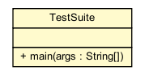

dip.misc
Class TestSuite

java.lang.Object
 dip.misc.TestSuite
dip.misc.TestSuite
public final class TestSuite
- extends java.lang.Object
A very hastily-programmed Test harness..
This will read in a file of cases (1 or more). All cases must use the same
variant. The variant is then loaded, orders are parsed, and adjudication then
occurs. After adjudication, the positions of units are checked with that of
the case file for discrepancies. If no discrepancies exist, the case passes.
Note that when in performance-testing mode, all logging is disabled and
comparison-checking is not performed; the goal is testing adjudicator code
only.
All output is printed to stdout
Case File Format Notes:
-
Any line prefixed by a # is a comment line. A # may be placed after a line,
to comment out part of a line or make a comment about a particular line.
-
Empty lines / whitespace-only lines are ignored. Whitespace before keywords
and lines are also ignored by the parser.
-
Single Line keywords are a keyword, followed by whitespace, followed by
text; that text is parsed and associated with that keyword. Some keywords
(such as END) do not have any text that follows them.
-
Block keywords begin a block; DO NOT put text on the same line as a block
keyword; start text on the next line. A block ends when another keyword
(block or single line) is detected.
Case File Keywords:
- VARIANT_ALL: Required.
This must occur at the beginning of the case file. All cases are
required to use the same variant. Single line.
- CASE: (String)Required.
Begins a Case. The text following the case is the case name, and may
contain any printable character, including spaces, but must fit on
a single line.
- PRESTATE_SETPHASE: (phase)Recommended.
Set the phase (e.g., "Fall 1901, Movement" or "F1901M"). Single line.
- PRESTATE: Recommended.
Begins the non-dislodged unit setup block. Unit setups must consist of power, unit type,
and province, on the next line(s). e.g.: "England: F lon". Any orders to
non-dislodged units require a unit in the PRESTATE block.
- PRESTATE_DISLODGED: Optional.
If any dislodged units are to be positioned, set them in this block.
e.g.: "England: F lon" would create a dislodged Fleet in London.
- PRESTATE_RESULTS: Optional.
If a retreat phase is to be adjudicated, this sets up the "prior" phase.
Begins a block, where each order must be preceded by the keyword "SUCCESS:"
or "FAILURE:", followed by an order (i.e., Move, Hold, etc.).
- PRESTATE_SUPPLYCENTER_OWNERS: Optional.
Set owned, but not occupied, supply center owners in this block. If this is omitted,
the ownership is used from the initial variant settings. If it is supplied,
the variant information is erased and replaced with the given information.
Note: Currently you must use a unit too; e.g., "France: F lon" would set
the supply center in London to be owned by France. The unit type is required by
the parser but is ignored.
- ORDERS: Recommended.
One line, one order, in this block. e.g., "England: F lon-bel".
The orders are what will be adjudicated.
- POSTSTATE: Recommended.
A block of post-adjudication non-dislodged unit positions. The TestSuite tests
and make sure these match the post-adjudication state. Same format as PRESTATE.
- POSTSTATE_DISLODGED: Recommended.
A block of post-adjudication dislodged unit positions. The TestSuite tests
and make sure these match the post-adjudication state. Same format as PRESTATE
(or PRESTATE_DISLODGED for that matter).
- POSTSTATE_SAME: Optional.
If non-dislodged units do not change position, this may be used instead
of a POSTSTATE block and a list of non-dislodged unit positions.
- END: Required.
Ends a case. Must be the last line in a case.
An Example Case File:
VARIANT_ALL Standard
CASE Example Case 1 (illustrative example)
PRESTATE_SETPHASE Fall 1901, Movement
PRESTATE
Russia: F con
Russia: F bla
Turkey: F ank
ORDERS
Russia: F con S F bla-ank
Russia: F bla-ank
Turkey: F ank-con
POSTSTATE
Russia: F con
Russia: F ank
POSTSTATE_DISLODGED
Turkey: F ank
END
|
Method Summary |
static void |
main(java.lang.String[] args)
Start the TestSuite |
| Methods inherited from class java.lang.Object |
clone, equals, finalize, getClass, hashCode, notify, notifyAll, toString, wait, wait, wait |
main
public static void main(java.lang.String[] args)
- Start the TestSuite